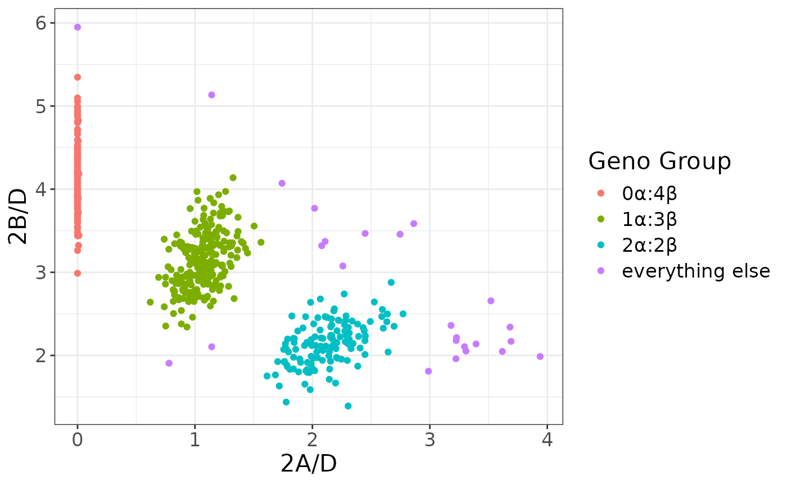

Estimating Tryptase Copy Numbers from Sequence Data
Jeff Wall
Oregon Health and Science Universityjeffwall.genetics@gmail.com
Jonathan Carroll
Human Immunology Biosciencesjonathan@hibio.com
2 May 2024
TrypLik.RmdOverview
We have developed a likelihood-based approach for estimating tryptase copy numbers (specifically the numbers of \(\alpha\) alleles, \(\beta\) alleles and \(\beta\) frameshift alleles) directly from whole-genome (preferable) or whole-exome sequence data. The approach utilizes an updated assembly of canonical \(\alpha\), \(\beta\), and \(\delta\) tryptase alleles, and identifies reads that map uniquely to only one of these alleles. The complete workflow is implemented in the package TrypLik.
Background
The tryptase gene cluster contains four closely spaced paralogous genes on chromosome 16p13.3. These include TPSAB1 and TPSB2, which together encode the \(\alpha\) and \(\beta\) tryptase peptides. TPSAB1 encodes two major alleles, \(\alpha\) and \(\beta\)I, while TPSB2’s major alleles are \(\beta\)II and \(\beta\)III. \(\alpha\) and \(\beta\)I are \(\sim1\%\) diverged over a \(1.2\) Kbp region, while \(\beta\)I and \(\beta\)II differ by just a single nucleotide over the same region. \(\alpha\) alleles are thought to be enzymatically inactive, and while most \(\beta\) alleles are active, there is a specific \(\beta\) frameshift variant (\(\beta\)III\(^{FS}\)) that is inactive.
Recent work has identified a familial inherited syndrome, hereditary alpha tryptasemia (H\(\alpha\)T), which is associated with one or more duplications of the \(\alpha\) allele in TPSAB1 Lyons et al., 2016. Common phenotypes found in H\(\alpha\)T patients include systemic venom reactions, pruritis, IBS, reflux, skeletal abnormalities, retained primary dentition and anthralgia. There is also evidence for \(\beta\) duplications and deletions (Chollet et al., 2021, Glover et al., 2022), though it is not yet clear if this reflects copy number variants (CNVs) in only TPSAB1 or CNVs in both TPSAB1 and TPSAB2. Nothing is known about the clinical effects of tryptase \(\beta\) copy number variation.
While \(\alpha\), \(\beta\), and \(\beta\)III\(^{FS}\) copy numbers can be accurately determined using custom droplet digital PCR (ddPCR) assays (cf. Lyons et al., 2016), it is much more challenging to estimate copy numbers from standard short-read (e.g. Illumina) sequence data, even with a high depth of coverage. This is primarily due to the fact that \(\alpha\), \(\beta\), and \(\beta\)III\(^{FS}\) tryptase alleles are so similar, but exacerbated by errors in the human reference genome assembly (hg38), which appears to have chimeric alleles for both TPSAB1 and TPSB2. In addition, the published allelic sequences in Maun et al., 2019 also appear to be incorrect. This has motivated our efforts to generate our own consensus assemblies of different tryptase alleles (see below).
Instructions on use
There are two main parts to the workflow: First, we map reads to a tryptase consensus sequence and count the ones that map uniquely to tryptase \(\alpha\), \(\beta\), \(\beta\)III\(^{FS}\) and \(\delta\) alleles. Second, we perform Bayesian likelihood calculations to estimate the most likely copy number count. We describe each step in greater detail below.
Tryptase read mapping
This part of the workflow can be broken up into the following components:
- Subset an indexed bam file to consider only reads mapping to the tryptase region
- Convert the output back to (the original) paired-end fastq reads
- Map raw reads to consensus tryptase sequence
- Remove duplicates
- Count the numbers of reads containing specific 30 bp motifs that map specifically to a single tryptase allele
There are different ways to go about each of these steps:
Indexing bam files
If a datafile is not already indexed, we recommend using samtools to do so. For example, we use publicly available high-coverage whole genome sequence data from the 1000 Genomes Project as a test case. We downloaded the file “HG00100.final.cram” from https://www.internationalgenome.org/data-portal/sample/HG00100 to use as an example.Indexing and subsetting can be performed with the following commands:
Mapping reads to tryptase consensus sequence
Here, we are using the tryptase consensus sequence published by Maun et al., 2019 to winnow out reads that are in the tryptase region that do not actually map to tryptase genes. The following command works for our continuing example:
The file consensus.fa is included with this package in
inst/consensus.fa.
Removing duplicates
This is generally done using Picard or samtools. Here is an example of doing so using samtools, with the output written to the file “temp.sam”.
Counting reads mapping to specific tryptase alleles
The file “count_tryptase.sh” is a shell script that counts the numbers of reads that map specifically to different tryptase alleles (see below for technical details). It requires the input file to be called “temp.sam”. Output consists of \(9\) integers summarizing read counts:
The first four of these are the numbers of reads mapping uniquely to \(\alpha\), \(\beta\)I, \(\beta\)II or \(\beta\)III alleles in the specific \(83\) bp region where all four alleles can be distinguished from each other.
The next two are the numbers of reads that map uniquely to \(\beta\) ‘wildtype’ (i.e. not frameshifted) and \(\beta\) frameshifted sequences
The final three are the numbers of reads that can be uniquely mapped to \(\alpha\), \(\beta\), or \(\delta\) alleles respectively
Further details on these can be found in the technical details below. For our example with sample HG00100 from the 1000 Genomes Project, the output of “count_tryptase” is
The above processing can be performed in R (provided samtools and bwa are available) with the following wrappers
sam_file <- preprocess("HG00100.final.cram")
counts <- count_tryptase(sam_file)
counts
#> [1] 24 0 22 0 26 0 347 316 304Tryptase copy number likelihood calculations
The last five numbers from the output of “count_tryptase” are used as input to the program TrypLik to estimate the likelihoods of different combinations of total number of \(\alpha\) alleles, total number of \(\beta\) alleles, and total number of \(\beta\) frameshift alleles. The method accounts for dependence across read counts (caused by the same \(2 \times 150\) bp read generally overlapping multiple of the regions used to distinguish between alleles) and also uses prior information on CNV frequencies in different populations. Usage is
WT: number of reads mapping to \(\beta\) “wildtype” alleles at the site of
the frameshift mutation (5th field from “count_tryptase” output)
FS: number of reads mapping to \(\beta\) frameshift alleles at the site of
the frameshift mutation (6th field from “count_tryptase” output)
Areads: number of reads mapping uniquely to \(\alpha\) alleles relative to \(\beta\) and \(\delta\) alleles (7th field from
“count_tryptase” output)
Breads: number of reads mapping uniquely to \(\beta\) alleles relative to \(\alpha\) and \(\delta\) alleles (8th field from
“count_tryptase” output)
Dreads: number of reads mapping uniquely to \(\delta\) alleles relative to \(\alpha\) and \(\beta\) alleles (9th field from
“count_tryptase” output)
-pop POP: optional flag to specify the predominant
ancestry of the test sample. Options include EUR for European ancestry,
SAS for South Asian ancestry, EAS for East Asian ancestry and AFR for
African ancestry. The default, if the -pop flag is not
included, is European ancestry.
Note that these likelihood calculations assume that all individuals
contain exactly two tryptase \(\delta\)
alleles. Dreads acts as a ‘control’ from which we estimate
the other copy numbers. The output consists of a list of different \(\alpha\), \(\beta\) and \(\beta\) frameshift allele copy numbers
followed by the combination’s posterior probability. To continue our
example from before, calculation for HG00100 would use the command
Output would look like this:
| Alpha count | Beta count | Beta FS count | Posterior likelihood |
|---|---|---|---|
| 2 | 2 | 0 | 0.99890 |
| 2 | 3 | 0 | 0.00008 |
| 3 | 2 | 0 | 0.00082 |
| 3 | 3 | 0 | 0.00020 |
The method estimates that HG00100 has a 2\(\alpha:2\beta:2\delta\) genotype (with no frameshift alleles) with posterior probability 99.89%.
An R wrapper for this function is provided, which takes either a single vector of values or individual arguments
TrypLik(counts)
#> Alpha_count Beta_count Beta_FS_count Posterior_likelihood
#> 1 2 2 0 0.99890
#> 2 2 3 0 0.00008
#> 3 3 2 0 0.00082
#> 4 3 3 0 0.00020
# or TrypLik(26, 0, 347, 316, 304, pop = 0)Technical details
de novo assembly/alignment
We started by aligning cDNA sequences to a 40 bp region near the probes used by Lyons et al., 2016(Supplementary Figure 3b) for ddPCR.
| Delta (CCDS10432.1) | CCAGGCCAGG CCCTGCAGCA AACGGGCATT GTTGGGGGGC |
| Alpha (M30038.1) | CCAGTCCAGG CCCTGCAGCA AGCGGGTATC GTCGGGGGTC |
| Beta1 (M33492.1) | CCAGGCCAGG CCCTGCAGCG AGTGGGCATC GTCGGGGGTC |
| Beta2 (BC065923.1) | CCAGGCCAGG CCCTGCAGCG AGTGGGCATC GTTGGGGGTC |
| Beta3 (AF099143) | CCAGGCCAGG CCCTGCAGCG AGTGGGCATC GTTGGGGGTC |
Here sites in red are fixed differences between TPSD1 and (TPSAB1+TPSB2), while sites in yellow can be used to distinguish \(\alpha\), \(\beta\)I, and \(\beta\)II/\(\beta\)III alleles from each other. \(\beta\)II and \(\beta\)III alleles are distinguishable from each other at sites near the Lyons et al., 2016 REV primer as follows:
| Beta2 (BC065923.1) | GAGAGTCCAC GGCCCATACT |
| Beta3 (AF099143) | GAGAGTCCGC GACCGATACT |
We assumed that the sequences listed above are correct and invariant in the different tryptase alleles. We then used Illumina short read data to ‘extend’ allele-specific alignments. Specifically, we combined the raw reads from 30 randomly chosen individuals of European ancestry from the 1000 Genomes Project (high-coverage data generated by the NYGC) and pulled out those reads that matched the above sequences. We then could expand on the allele-specific assemblies by looking at the alignments just 5’ and 3’ to the sequences shown above, and concurrently identify common allele-specific polymorphisms. We continued to iteratively extend these assemblies until \(\alpha\) and \(\beta\) alleles could not be distinguished from each other. Roughly speaking, since the Illumina data consisted of 150 bp reads, this process can continue as long as there is a fixed difference between allelic assemblies every \(\sim 150\) bp. We extended these assemblies across \(\sim 1.1\) Kbp of sequence including most of the coding regions (see Appendix 1).
Our alignments show the expected difference between \(\alpha\) and \(\beta\) alleles at the putative functional mutation. In addition, we confirm that the frameshift mutation happens only on a \(\beta\)III background (leading to the inactivated \(\beta\)III\(^{FS}\) allele), and that the \(\beta\)I and \(\beta\)II consensus sequences differ by just a single nucleotide, despite \(\beta\)I being an allele that is (supposed to be) exclusive to TPSAB1 and \(\beta\)II being confined to TPSB2. This likely reflects paralogous gene conversion between tryptase genes over evolutionarily recent time scales.
The tryptase allele assemblies generated here differ slightly from all previously published assemblies, including some of the cDNA sequences, the Lyons et al., 2016 tryptase alignment, the Maun et al., 2019 tryptase alignment, and the human reference genome (hg38). We believe though that Illumina reads are highly accurate, and can show how these previous assemblies are inconsistent with Illumina data from multiple individuals.
Tryptase CNV genotyping from high-coverage Illumina reads
From the alignment described above, we identified \(11\) different \(30\) bp regions where reads could be uniquely mapped to \(\alpha\), \(\beta\), or \(\delta\) alleles. Using the base numbering defined by Maun et al., 2019(Data S1) and also used in the accompanying table, these correspond to the following regions:
\[\begin{array}{ccc} 560\, – 589 & 1010\, – 1039 & 1360\, – 1389 \\ 740\, – 769 & 1115 \sim 1146 & 1510\, – 1539 \\ 840\, – 869 & 1220\, – 1249 & 1560\, – 1589 \\ 940\, – 969 & 1260\, – 1289 \end{array}\]Tallying up the total number of ‘\(\alpha\) reads’, ‘\(\beta\) reads’ and ‘\(\delta\) reads’ (which we call here \(A\), \(B\) and \(D\) respectively) gives us a way of estimating the relative copy numbers of \(\alpha\), \(\beta\) and \(\delta\) alleles. In particular, if we assume each individual has exactly two copies of TPSD1 (i.e. no copy number variation in TPSD1), then the number of \(\alpha\) and \(\beta\) alleles can be estimated by \(2A/D\) and \(2B/D\) respectively.
Some caveats apply:
The regions are not independent of each other, since the \(2 \times 150\) bp paired-end reads generally include multiple regions. This leads to a greater variance than otherwise expected in estimated allele counts.
Even in a pool of individuals with the same true number of \(\alpha\) and \(\beta\) alleles, the estimates \(2A/D\) and \(2B/D\) will be correlated since they both have the same denominator.
Unknown (or unaccounted for) polymorphisms within an allelic class can lead to misclassified reads. This is perhaps most important in the analysis of non-European ancestry individuals.
The method assumes that all CNVs affect the entire \(1\) Kbp test region, though we know this isn’t true. Chovanec, 2022 report the existence of σ alleles, which appear to be a chimera of \(\alpha\) and \(\beta\) alleles. In our analyses, these alleles are estimated as partial \(\alpha\) and partial \(\beta\), proportional to the numbers of reads mapping to each canonical allele assembly.
We suggest using an empirically-based approach for estimating the bias in the estimates (e.g. estimating
\[ E \bigl( \frac{2A}{D} |\ \textrm{actual number of }\alpha\textrm{ alleles is known} \bigr) \]
that uses orthogonal information on true allele counts (e.g. validated ddPCR data). A preliminary version of this is described below.
\(\beta\)III frameshift mutation
The approach described above can estimate the total copy number of tryptase beta alleles, but some of these beta alleles are inactive due to a frameshift mutation. In parallel, we conduct a read-counting exercise that counts reads that uniquely map to the \(\beta\)III\(^{FS}\) allele and reads that map to all other \(\beta\) alleles:
| \(\beta\)III\(^{FS}\) | CTCAGAGACC TTCCCCCCCG GGGATGCCGT |
| All other \(\beta\) | CTCAGAGACC TTCCCCCC–G GGGATGCCGTG |
(Note that both \(\alpha\) and \(\sigma\) alleles do not map to either of these sequences.) The observed numbers of reads in each of these two categories (called here FS+ and FS-) is expected to follow a binomial distribution with probabilities proportional to the true numbers of \(\beta\)III\(^{FS}\) and non-\(\beta\)III\(^{FS}\) \(\beta\) alleles. Further, by assumption, \(\beta\)III\(^{FS}\) alleles only occur in TPSB2. If data = {FS+, FS-}, then under a simple likelihood framework,
\[ \rm{lik} \bigl(data\bigr) \sim Pr \bigl(genotype\bigr)\ Pr \bigl( data\ |\ genotype\bigr) \]
Suppose for example we observe \(28\) and \(36\) reads supporting \(\beta\)III\(^{FS}\) and non-\(\beta\)III\(^{FS}\) \(\beta\) alleles respectively (i.e. data = \(\{28, 36\}\)) in an individual of European ancestry with an estimated tryptase CNV genotype of \(0\alpha:4\beta:2\delta\). Based on the European \(1\) KGP data, the frequency of the \(\beta\)III\(^{FS}\) mutation is \(\sim\!0.1766\). So, the naïve (i.e. prior or Hardy-Weinberg) probability of a homozygous \(\beta\)III\(^{FS}\) genotype (i.e. \(\beta\)III\(^{FS}\) mutations on both chromosomes) is \((0.1766)^2\) and the probability of having exactly one copy of \(\beta\)III\(^{FS}\) is \(2(0.1766)(1-0.1766)\). Assuming the estimated tryptase CNV genotype is correct, we calculate
\[ \textrm{Pr} \bigl(\textrm{data}\ |\ \beta\textrm{III}^{FS}\, \textrm{heterozygote}\bigr) = {64 \choose 28} (0.25)^{28}(0.75)^{36},\ \textrm{and} \] \[ \textrm{Pr} \bigl(\textrm{data}\ |\ \beta\textrm{III}^{FS}\, \textrm{homozygote}\bigr) = {64 \choose 28} (0.5)^{28} (0.5)^{36} \]
and
\[ \textrm{lik} \bigl(\beta\textrm{III}^{FS}\, \textrm{homozygote}\bigr) \sim 0.0018922,\ \textrm{and} \] \[ \textrm{lik} \bigl(\beta\textrm{III}^{FS}\, \textrm{heterozygote}\bigr) \sim 0.00014354 \]
In a Bayesian context, the posterior \(\textrm{Pr} \bigl(\beta\textrm{III}^{FS}\, \textrm{homozygote}\bigr) = 0.9295\), and we conclude that the individual is likely to have \(0 \alpha\) alleles, \(2\) active \(\beta\) alleles and \(2\) inactive \(\beta\)III\(^{FS}\) alleles.
Tryptase CNV genotyping revisited: likelihood framework
In an idealized world where the 4 caveats described above do not apply, each read would be independent and the read counts \((A, B, D)\) could be modeled as following a multinomial distribution conditional on the sum \(A+B+D\), with probabilities for each category proportional to the true copy numbers of \(\alpha\) \(\beta\) and \(\delta\). We employ two modifications to this model to account for deviations from model assumptions:
We replace \((A+B+D)\) by \((A+B+D) / R\), the “effective number of independent read counts”, to account for caveat #1
We reweight the multinomial probabilities by factors of \(E(2A/D\ |\ \alpha\ \textrm{copy number} = 1)\) and \(E(2B/D\ |\ \beta\ \textrm{copy number} = 3)\ /\ 3\) for \(\alpha\) and \(\beta\) copy numbers to account for unknown structural variants and/or polymorphisms
We use empirical data from the EUR populations from the 1000 Genomes Project to estimate these correction factors. First, we plotted \(2A/D\) vs. \(2B/D\) for these \(503\) samples:
genomes <- TrypLik::tryptase_1KG()
library(ggplot2)
ggplot(genomes, aes(`2A/D`, `2B/D`, col = `Geno Group`)) +
geom_point() +
theme_bw() +
theme(text = element_text(size = 16))
The source for this data is available to an R session with
tryptase_1KG()
head(tryptase_1KG())
#> 2A/D 2B/D Geno Group
#> 1 0 2.9885 0α:4β
#> 2 0 3.2629 0α:4β
#> 3 0 3.4384 0α:4β
#> 4 0 3.4791 0α:4β
#> 5 0 3.4792 0α:4β
#> 6 0 3.5294 0α:4β
tail(tryptase_1KG())
#> 2A/D 2B/D Geno Group
#> 498 3.3934 2.1381 everything else
#> 499 3.5198 2.6565 everything else
#> 500 3.6170 2.0479 everything else
#> 501 3.6826 2.3413 everything else
#> 502 3.6910 2.1691 everything else
#> 503 3.9388 1.9878 everything elseWe focus on the dots colored green, which are estimated to have a tryptase genotype of \(1\alpha:3\beta:2\delta\). The average values of \(2A/D\) and \(2B/D\) are \(1.06\) and \(3.13\) respectively, and these means are relatively insensitive to the inclusion/exclusion of specific points on the periphery of the central mass. In addition, we note that
\[ \begin{eqnarray} \textrm{Var}(2A/D) &=& 0.0263 \\ \textrm{Var}(2B/D) &=& 0.1286 \\ r^2 (2A/D, 2B/D) &=& 0.1953 \\ \end{eqnarray} \]
We then ran simulations with different values of R (but conditional on the observed \(A\), \(B\) and \(D\) values) to heuristically find a value that, on average, produces correlation and variances similar to what was observed. We settled on \(R = 2.75\), but with the caveat that this estimation process was entirely qualitative. We do note though that this \(R\) is approximately equal to the number of \(30\) bp informative regions covered by an average \(2\times 150\) bp read pair in the target tryptase region. As an example of the process, suppose the observed data \(\{A, B, D\} = \{192, 600, 290\}\) and that we want to estimate the probability of observing the data given a true genotype of \(1\alpha:4\beta\). Then, \(2A/D = 1.324, 2B/D = 4.138\), and the ’effective number of independent reads is \((192+600+290)/2.75 \approx 393\). Then, to estimate the probability of the genotype \(1\alpha:3\beta:2\delta\), for example, we calculate
\[ \begin{align} &\textrm{Pr}\left(2A/D \approx 1.324\ \&\&\ 2B/D \approx 4.138\ |\ \textrm{true genotype is } 1\alpha:3\beta:2\delta\right) \approx \\ &\textrm{Pr}\left(2A/D \approx 1.324\ \&\&\ 2B/D \approx 4.138\ |\ 393 \textrm{ independent reads are simulated from a}\right. \\ &\textrm{multinomial distribution with relative probabilities of } 1.06, 3.13 \textrm{ and } 2 \textrm{ for } \alpha, \beta, \\ &\left.\textrm{ and } \delta \textrm{ reads respectively}\right) \end{align} \] These are actually approximate likelihoods; operationally, \(2A/D \approx 1.324\) is the estimated probability that the simulated \(2A/D\) is between \((0.99\times1.324)\) and \((1.01\times1.324)\). To calculate posterior probabilities, we still need a prior estimate of the population-level genotype frequencies. There is some element of circularity here since we ultimately are estimating genotypes (which go in to the population-level genotype frequency estimates). Ideally we would have an independent way of assessing population frequencies (e.g. widespread ddPCR), but in the absence of that we have obtained crude prior estimates (see Table 1 below) by qualitative assessments of figures like Figure 1. Continuing with our example (and assuming European ancestry), we estimate
\[ \begin{align} \textrm{lik}\left(1\alpha:3\beta:2\delta\right) &\sim \textrm{Pr}\left(1\alpha:3\beta:2\delta\right)\ \times \\ &\; \; \; \; \; \textrm{Pr}\left(2A/D \approx 1.324\ \&\&\ 2B/D \approx 4.138\ | \right. \\ &\; \; \; \; \; \; \; \; \; \; \; \left.\textrm{genotype} = 1\alpha:3\beta:2\delta\right) \\ &= 0.434 \times 0.0002521 \\ \\ \textrm{lik}\left(1\alpha:4\beta:2\delta\right) &\sim \textrm{Pr}\left(1\alpha:4\beta:2\delta\right)\ \times \\ &\; \; \; \; \; \textrm{Pr}\left(2A/D \approx 1.324\ \&\&\ 2B/D \approx 4.138\ | \right. \\ &\; \; \; \; \; \; \; \; \; \; \; \left. \textrm{genotype} = 1\alpha:4\beta:2\delta\right) \\ &= 0.03 \times 0.0012967 \\ \\ \textrm{lik}\left(1\alpha:5\beta:2\delta\right) &\sim \textrm{Pr}\left(1\alpha:5\beta:2\delta\right)\ \times \\ &\; \; \; \; \; \textrm{Pr}\left(2A/D \approx 1.324\ \&\&\ 2B/D \approx 4.138\ | \right. \\ &\; \; \; \; \; \; \; \; \; \; \; \left. \textrm{genotype} = 1\alpha:5\beta:2\delta\right) \\ &= 0.0004 \times 0.000019 \end{align} \]
The posterior probability of a \(1\alpha:3\beta:2\delta\) genotype is estimated at
\[ \frac{0.434 \times 0.0002521}{0.434 \times 0.0002521 + 0.03 \times 0.0012967 + 0.0004 \times 0.000019} = 0.738 \]
Note that this estimate (and many others) is highly sensitive to the (unknown) prior population frequencies. \(\textrm{Pr}\left(\textrm{data}\ |\ \textrm{genotype}\right)\) is highest for \(1\alpha:4\beta:2\delta\) by a factor of \(5\), but this is swamped out by the very low prior for the allele frequency.
Table 1. Prior estimates of tryptase genotype frequencies, stratified by ancestry: EUR = European, EAS = East Asian, AFR = African, SAS = South Asian
| \(\alpha\) copy number | \(\beta\) copy number | EUR | EAS | AFR | SAS |
|---|---|---|---|---|---|
| 0 | 2 | 0.0001 | 0.025 | 0.001 | 0.004 |
| 0 | 3 | 0.013 | 0.037 | 0.015 | 0.053 |
| 0 | 4 | 0.219 | 0.032 | 0.274 | 0.165 |
| 0 | 5 | 0.020028 | 0.004 | 0.1 | 0.0325 |
| 0 | 6 | 0.0004 | 0.0002 | 0.008 | 0.0006 |
| 0 | 7 | 0.00005 | 0.00002 | 0.0003 | 0.00005 |
| 0 | 8 | 0.00001 | 0.000002 | 0.0001 | 0.000005 |
| 1 | 1 | 0.0001 | 0.0021 | 0.0001 | 0.0005 |
| 1 | 2 | 0.013 | 0.22 | 0.012 | 0.017 |
| 1 | 3 | 0.434 | 0.23 | 0.39 | 0.444 |
| 1 | 4 | 0.03 | 0.012 | 0.06 | 0.01 |
| 1 | 5 | 0.0004 | 0.0005 | 0.005 | 0.0005 |
| 1 | 6 | 0.00001 | 0.00001 | 0.0001 | 0.00005 |
| 1 | 7 | 0.000001 | 0.000003 | 0.00001 | 0.000005 |
| 2 | 1 | 0.001 | 0.004 | 0.0007 | 0.0003 |
| 2 | 2 | 0.208 | 0.42 | 0.126536 | 0.256129 |
| 2 | 3 | 0.03 | 0.005 | 0.003 | 0.004 |
| 2 | 4 | 0.004 | 0.0005 | 0.0001 | 0.001 |
| 2 | 5 | 0.0001 | 0.00001 | 0.00001 | 0.0001 |
| 2 | 6 | 0.00004 | 0.000002 | 0.000001 | 0.00001 |
| 3 | 1 | 0.0001 | 0.0001 | 0.0001 | 0.0001 |
| 3 | 2 | 0.018 | 0.006 | 0.003 | 0.01 |
| 3 | 3 | 0.005 | 0.001 | 0.0003 | 0.0003 |
| 3 | 4 | 0.0004 | 0.0001 | 0.0001 | 0.0001 |
| 3 | 5 | 0.00001 | 0.00001 | 0.0001 | 0.00001 |
| 4 | 2 | 0.002 | 0.0001 | 0.0001 | 0.0003 |
| 4 | 3 | 0.0008 | 0.0001 | 0.0001 | 0.0001 |
| 4 | 4 | 0.00005 | 0.0001 | 0.0001 | 0.0001 |
| 4 | 5 | 0.00001 | 0.0001 | 0.0001 | 0.0001 |
| 5 | 2 | 0.0002 | 0.00001 | 0.00001 | 0.00001 |
| 5 | 3 | 0.0001 | 0.00001 | 0.00001 | 0.00001 |
| 5 | 4 | 0.00004 | 0.00001 | 0.00001 | 0.00001 |
| 5 | 5 | 0.00001 | 0.00001 | 0.00001 | 0.00001 |
| 6 | 2 | 0.00003 | 0.000001 | 0.000001 | 0.00001 |
| 6 | 3 | 0.00001 | 0.000001 | 0.000001 | 0.000001 |
| 6 | 4 | 0.000001 | 0.000001 | 0.000001 | 0.000001 |
Appendix
Tryptase region consensus alignments for different alleles, using the numbering of Maun et al., 2019
Green text = cDNA sequence is potentially incorrect
Red highlight = fixed difference between delta and (alpha + beta)
Yellow highlight = polymorphic within alpha + beta, and can be used to discriminate between alpha &/or beta alleles
Grey highlight = polymorphic within the specific allele/gene
Bases 370 – 449
| delta | GCCCGTCCTG GCGAGCCCGG CCTACGTGGC CCCTGGTGAG TCCCAGCCGG GGTCCACCCT GCCCCTCACC ACATTCCACA |
| alpha | GCCCGTCCTG GCGAGCCGCG CCTACGCGGC CCCTGGTGAG TCCCAGCCGG GGTCCACCCT GCCCCTCACC ACATTCCACA |
| beta | GCCCGTCCTG GCGAGCCGCG CCTACGCGGC CCCTGGTGAG TCCCAGCCGG GGTCCACCCT GCCCCTCACC ACATTCCACA |
Bases 450 – 549
| delta | GATCAGGGCC TGGGTGGGTT CTGGGGAGGC CGGGCTGGCC CCCACACAGG GAAGGGCTGG TCCCAGGCGT GGGGCGGCTT CTTGGTCCTG ACCTGGCACC |
| alpha | GGTCAGGGCC TGGGTGGGTT CTGGGGAGGC TGGGCTGGCC CCCACACAGG GAAGGGGTGG GCCCAGGCGT GGGGCTGCTT CCTGGTCCTG ACCTGGCACC |
| beta1 | GGTCAGGGCC TGGGTGGGTT CTGGGGAGGCCGGGCTGGCC CCCACACAGG GAAGGGCTGG GCCCAGGCGT GGGGCTGCTT CCTGGTCCTG ACCTGGCACC |
| beta2 | GGTCAGGGCC TGGGTGGGTT CTGGGGAGGCCGGGCTGGCC CCCACACAGG GAAGGGCTGG GCCCAGGCCT GGGGCTGCTT CCTGGTCCTG ACCTGGCACC |
| beta3 | GGTCAGGGCC TGGGTGGGTT CTGGGGAGGCCGGGCTGGCC CCCACACAGG GAAGGGCTGG GCCCAGGCCT GGGGCTGCTT CCTGGTCCTG ACCTGGCACC |
Bases 550 – 649
| delta | TGCCCCAGCC CCAGGCCAGG CCCTGCAGCA AACGGGCATT GTTGGGGGGC AGGAGGCCCC CAGGAGCAAG TGGCCCTGGC AGGTGAGCCT GAGAGTCCGC |
| alpha | TGCCCCAGCC CCAGTCCAGG CCCTGCAGCA AGCGGGTATC GTCGGGGGTC AGGAGGCCCC CAGGAGCAAG TGGCCCTGGC AGGTGAGCCT GAGAGTCCGC |
| beta1 | TGCCCCAGCC CCAGGCCAGG CCCTGCAGCG AGTGGGCATC GTCGGGGGTC AGGAGGCCCC CAGGAGCAAG TGGCCCTGGC AGGTGAGCCT GAGAGTCCAC |
| beta2 | TGCCCCAGCC CCAGGCCAGG CCCTGCAGCG AGTGGGCATC GTTGGGGGTC AGGAGGCCCC CAGGAGCAAG TGGCCCTGGC AGGTGAGCCT GAGAGTCCAC |
| beta3 | TGCCCCAGCC CCAGGCCAGG CCCTGCAGCG AGTGGGCATC GTTGGGGGTC AGGAGGCCCC CAGGAGCAAG TGGCCCTGGC AGGTGAGCCT GAGAGTCCGC |
Bases 650 – 749
| delta | GGCCCATACT GGATGCACTT CTGCGGGGGC TCCCTCATCC ACCCCCAGTG GGTGCTAACC GCGGCGCACT GCGTGGAACC GTGAGTCTCC TGGGGCCTGG |
| alpha | GACCGATACT GGATGCACTT CTGCGGGGGC TCCCTCATCC ACCCCCAGTG GGTGCTGACC GCGGCGCACT GCCTGGGACC GTGAGTCTCC CAGGGCCTGG |
| beta1 | GGCCCATACT GGATGCACTT CTGCGGGGGC TCCCTCATCC ACCCCCAGTG GGTGCTGACC GCAGCGCACT GCGTGGGACC GTGAGTCTCC CGGGGCCTGG |
| beta2 | GGCCCATACT GGATGCACTT CTGCGGGGGC TCCCTCATCC ACCCCCAGTG GGTGCTGACC GCAGCGCACT GCGTGGGACC GTGAGTCTCC CGGGGCCTGG |
| beta3 | GACCGATACT GGATGCACTT CTGCGGGGGC TCCCTCATCC ACCCCCAGTG GGTGCTGACC GCAGCGCACT GCGTGGGACC GTGAGTCTCC CGGGGCCTGG |
Bases 750 – 849
| delta | AGGGGTGGGC AAGGGCTGGA TGTGAGCCCT GGCTCCCGGG TGCTCCTGGG GGCTGCCCAG GGCCCTGAGT GGGATCCTCC GCTGCCCAGG GACATCAAGG |
| alpha | AGGGGTGGGC AAGGGCTGGA TGTGAGCCCT GGCTCCCGGG TGCTCCTGGG GGCTGCCCAG GGCCCTGAGT GGGATCCTCC GCTGCCCAGG GACGTCAAGG |
| beta1 | AGGGGTGGGG AAGGGCTGGA TGTGAGCCCT GGCTCCCGGG TGCTCCTGGG GGCTGCCCAG GGCCCTGAGT GGGATCCTCC GCTGCCCAGG GACGTCAAGG |
| beta2 | AGGGGTGGGG AAGGGCTGGA TGTGAGCCCT GGCTCCCGGG TGCTCCTGGG GGCTGCCCAG GGCCCTGAGT GGGATCCTCC GCTGCCCAGG GACGTCAAGG |
| beta3 | AGGGGTGGGG AAGGGCTGGA TGTGAGCCCT GGCTCCCGGG TGCTCCTGGG GGCTGCCCAG GGCCCTGAGT GGGATCCTCC GCTGCCCAGG GACGTCAAGG |
Bases 850 – 949
| delta | ATCTGGCCGC CCTCAGGGTG CAACTGCGGG AGCAGCACCT CTACTACCAG GACCAGCTGC TGCCGGTCAG CAGGATCATC GTGCACCCAC AGTTCTACAT |
| alpha | ATCTGGCCAC CCTCAGGGTG CAACTGCGGG AGCAGCACCT CTACTACCAG GACCAGCTGC TGCCGGTCAG CAGGATCATC GTGCACCCAC AGTTCTACAT |
| beta1 | ATCTGGCCGC CCTCAGGGTG CAACTGCGGG AGCAGCACCT CTACTACCAG GACCAGCTGC TGCCGGTCAG CAGGATCATC GTGCACCCAC AGTTCTACAC |
| beta2 | ATCTGGCCGC CCTCAGGGTG CAACTGCGGG AGCAGCACCT CTACTACCAG GACCAGCTGC TGCCGGTCAG CAGGATCATC GTGCACCCAC AGTTCTACAC |
| beta3 | ATCTGGCCGC CCTCAGGGTG CAACTGCGGG AGCAGCACCT CTACTACCAG GACCAGCTGC TGCCGGTCAG CAGGATCATC GTGCACCCAC AGTTCTACAC |
Bases 950 – 1049
| delta | CATCCAGACC GGGGCGGACA TCGCCCTGCT GGAGCTGGAG GAGCCCGTGA ACATCTCCAG CCACATCCAC ACGGTCACGC TGCCCCCTGC CTCGGAGACC |
| alpha | CATCCAGACT GGAGCGGATA TCGCCCTGCT GGAGCTGGAG GAGCCCGTGA ACATCTCCAG CCGCGTCCAC ACGGTCATGC TGCCCCCTGC CTCGGAGACC |
| beta1 | CGCCCAGATC GGAGCGGACA TCGCCCTGCT GGAGCTGGAG GAGCCGGTGA ACGTCTCCAG CCACGTCCAC ACGGTCACCC TGCCCCCTGC CTCAGAGACC |
| beta2 | CGCCCAGATC GGAGCGGACA TCGCCCTGCT GGAGCTGGAG GAGCCGGTGA AGGTCTCCAG CCACGTCCAC ACGGTCACCC TGCCCCCTGC CTCAGAGACC |
| beta3 | CGCCCAGATC GGAGCGGACA TCGCCCTGCT GGAGCTGGAG GAGCCGGTGA ACGTCTCCAG CCACGTCCAC ACGGTCACCC TGCCCCCTGC CTCAGAGACC |
Bases 1050 – 1149
beta3FS location is colored pink [–/C]
| delta | TTCCCCCCGG GGATGCCGTG CTGGGTCACT GGCTGGGGCG ACGTGGACAA TAATGGTGGG GTGTTGGGGA CAGCGGGAGG CCGGGCCAGG TGGGCACCAA |
| alpha | TTCCCCCCGG GGATGCCGTG CTGGGTCACT GGCTGGGGCG ATGTGGACAA TGATGGTGGG ––TCTGGGGA CAGTGGGAGG TGGGGCCAGG GTCTTAGCCA |
| beta1 | TTCCCCCCGG GGATGCCGTG CTGGGTCACT GGCTGGGGCG ATGTGGACAA TGATGGTGGG ––TCTGGGGA CAGTGG–AGG TGGGGCCAGG GTCTTAGCCA |
| beta2 | TTCCCCCCGG GGATGCCGTG CTGGGTCACT GGCTGGGGCG ATGTGGACAA TGATGGTGGG ––TCTGGGGA CAGTGG–AGG TGGGGCCAGG GTCTTAGCCA |
| beta3 | TTCCCCCCGG GGATGCCGTG CTGGGTCACT GGCTGGGGCG ATGTGGACAA TGATGGTGGG ––TCTGGGGA CAGTGG–AGG TGGGGCCAGG GTCTTAGCCA |
Bases 1150 – 1249
| delta | GTCACAGCCACAGGCCAGTCCGTGGGGTGA CCCAGCCGGC CCCAGACCCG GCTCCACGCC |
| alpha | CAGCCCAGCC CCTGG––––– –––––––––– –––––––––– –––––––––– ––––––GCTC CAGGTGGGGG TTGCCCGGCC CCCTCCTCAG GCTGCACCCT |
| beta | CAGCCCAGCC CCTGGCCAGG GTCTTAGCCA CAGCCCAGCC CCTGGGCTCC CTCTGGGCTC CAGGTGGGGG TTGCCCGGCC CCCTCCTGAG GCTGCACCCT |
Bases 1250 – 1349
| delta | CCCCTCCGCC CCCAGTGCAC CTGCCGCCGC CATACCCGCT GAAGGAGGTG GAAGTCCCCG TAGTGGAAAA CCACCTTTGCAACGCGGAAT ATCACACCGG |
| alpha | CTTCCCCACC TGCAGAGCCC CTCCCACCGC CATTTCCCCT GAAGCAGGTG AAGGTCCCCA TAATGGAAAA CCACATTTGT GACGCAAAAT ACCACCTTGG |
| beta | CTTCCCCACC TGCAGAGCGC CTCCCACCGC CATTTCCTCT GAAGCAGGTG AAGGTCCCCA TAATGGAAAA CCACATTTGT GACGCAAAAT ACCACCTTGG |
Bases 1350 – 1449
| delta | CCTCCATACG GGCCACAGCT TTCAAATCGT CCGCGATGAC ATGCTGTGTG CGGGGAGCGAAAATCACGAC |
| alpha1 | CGCCTACACG GGAGACGACG TCCGCATCAT CCGTGACGAC ATGCTGTGTG CCGGGAACAG CCAGAGGGAC TCCTGCAAGG TGGGCCCCGC GTGTCCCCCG |
| alpha2 | CGCCTACACG GGAGACGACG TCCGCATCAT CCGTGACGAC ATGCTGTGTG CCGGGAACAC CCGGAGGGAC TCATGCCAGG TGGGCCCCGC GTGTCCCCCG |
| beta | CGCCTACACG GGAGACGACG TCCGCATCGT CCGTGACGAC ATGCTGTGTG CCGGGAACAC CCGGAGGGAC TCATGCCAGG TGGGCCCCGC GTGTCCCCCG |
Bases 1450 – 1549
| delta | GAGCGCATCCCTCATCCTGACCCCCGAAGCCTGGCCAGCG AGCACTGACC TCTGACCTTC CCAGGGTGAC TCTGGAGGGC CCCTGGTCTG CAAGGTGAAT |
| alpha1 | CCCCCCGCAC CCCAATCCCC ACTCCCGGGT CTGGTCGGTG AGCGCTGACC TCTGACCTTC CCAGGGCGAC TCTGGAGGGC CCCTGGTGTG CAAGGTGAAT |
| alpha2 | CCCCCCGCAC CCCAACCCCC ACTCCCAGGC CTGTTCGGCG AGCGCTGACC TCTGACCTTC CCAGGGCGAC TCTGGAGGGC CCCTGGTGTG CAAGGTGAAT |
| beta | CCCCCCGCCC CCCAACCCCC ACTCCCAGGC CTGTTCGGCG AGCGCTGACC TCTGACCTTC CCAGGGCGAC TCCGGAGGGC CCCTGGTGTG CAAGGTGAAT |
Bases 1550 – 1649
Alignment near putative functional alpha/beta mutation in green (cf. Maun et al., 2019 supplement)
| delta | GGCACCTAAC TGCAGGCGGG CGTGGTCAGC TGGGAGGAGA GCTGTGCCCA GCCCAACCGG CCTGGCATCT ACACCCGTGT CACCTACTAC TTGGACTGGA |
| alpha | GGCACCTGGC TACAGGCGGG CGTGGTCAGC TGGGACGAGG GCTGTGCCCA GCCCAACCGG CCTGGCATCT ACACCCGTGT CACCTACTAC TTGGACTGGA |
| beta | GGCACCTGGC TGCAGGCGGG CGTGGTCAGC TGGGGCGAGG GCTGTGCCCA GCCCAACCGG CCTGGCATCT ACACCCGTGT CACCTACTAC TTGGACTGGA |
Bases 1650 – 1749
| delta | TCCACCACTA TGTCCCCAAG AAGCCCTGAG CCAGGCCTGG GGTGTCCACC CGGGTCACTG GAGGGCCAGC CCCTCCTGTC CAAACCACCA CTGCTTCCTA |
| alpha | TCCACCACTA TGTCCCCAAA AAGCCGTGAG TCAGGCCTGG GTTGGCCACC TGGGTCACTG GAGGACCAAC CCCTGCTGTC CAAAACACCA CTGCTTCCTA |
| beta | TCCACCACTA TGTCCCCAAA AAGCCGTGAG TCAGGCCTGG GTTGGCCACC TGGGTCACTG GAGGACCAAC CCCTGCTGTC CAAAACACCA CTGCTTCCTA |
Citing TrypLik
We hope that TrypLik will be useful for your research. Please use the following information to cite the package and the overall approach. Thank you!
## Citation info
citation("TrypLik")
#> To cite package 'TrypLik' in publications use:
#>
#> Carroll J, Wall J (2024). _TrypLik: Calculates Tryptase Variant
#> Likelihoods_. R package version 0.1.0,
#> <https://hibio.github.io/TrypLik/>.
#>
#> A BibTeX entry for LaTeX users is
#>
#> @Manual{,
#> title = {TrypLik: Calculates Tryptase Variant Likelihoods},
#> author = {Jonathan Carroll and Jeff Wall},
#> year = {2024},
#> note = {R package version 0.1.0},
#> url = {https://hibio.github.io/TrypLik/},
#> }Reproducibility
The TrypLik package Carroll et al., 2024 was made possible thanks to:
- R R Core Team, 2024
- BiocStyle Oleś, 2024
- biocthis Collado-Torres, 2024
- knitr Xie, 2024
- RefManageR McLean, 2017
- rmarkdown Allaire et al., 2024
Bibliography
This vignette was generated using BiocStyle Oleś, 2024 with knitr Xie, 2024 and rmarkdown Allaire et al., 2024 running behind the scenes.
Citations made with RefManageR McLean, 2017.
[1] J. Allaire, Y. Xie, C. Dervieux, et al. rmarkdown: Dynamic Documents for R. R package version 2.26. 2024. URL: https://github.com/rstudio/rmarkdown.
[2] J. Carroll and J. Wall. TrypLik: Calculates Tryptase Variant Likelihoods. R package version 0.1.0. 2024. URL: https://hibio.github.io/TrypLik/.
[3] M. B. Chollet, A. Kovalszki, and C. Akin. “A novel case of beta-tryptase/TPSB2 allele duplication”. In: Journal of Allergy and Clinical Immunology 147(2) supplement (2021). DOI: 10.1016/j.jaci.2020.12.491.
[4] Chovanec. “Unpublished data”. TBA. 2022.
[5] L. Collado-Torres. Automate package and project setup for Bioconductor packages. https://github.com/lcolladotor/biocthisbiocthis - R package version 1.14.0. 2024. DOI: 10.18129/B9.bioc.biocthis. URL: http://www.bioconductor.org/packages/biocthis.
[6] S. C. Glover, A. Carlyle, and J. J. Lyons. “Hereditary alpha-tryptasemia despite normal tryptase-encoding gene copy number owing to copy number loss in trans”. In: Annals of Allergy, Asthma & Immunology 128(4) (2022), pp. 460-461. DOI: 10.1016/j.anai.2021.12.008.
[7] J. J. Lyons et al. “Elevated basal serum tryptase identifies a multisystem disorder associated with increased TPSAB1 copy number.” In: Nat Genet. 48(12) (2016), pp. 1564-1569. DOI: doi:10.1038/ng.3696.
[8] H. R. Maun et al. “An Allosteric Anti-tryptase Antibody for the Treatment of Mast Cell-Mediated Severe Asthma”. In: Cell 179(2) (2019), pp. 417-431. DOI: doi:10.1016/j.cell.2019.09.009.
[9] M. W. McLean. “RefManageR: Import and Manage BibTeX and BibLaTeX References in R”. In: The Journal of Open Source Software (2017). DOI: 10.21105/joss.00338.
[10] A. Oleś. BiocStyle: Standard styles for vignettes and other Bioconductor documents. R package version 2.32.0. 2024. URL: https://github.com/Bioconductor/BiocStyle.
[11] R Core Team. R: A Language and Environment for Statistical Computing. R Foundation for Statistical Computing. Vienna, Austria, 2024. URL: https://www.R-project.org/.
[12] Y. Xie. knitr: A General-Purpose Package for Dynamic Report Generation in R. R package version 1.46. 2024. URL: https://yihui.org/knitr/.
Session Info
utils::sessionInfo()
#> R version 4.4.0 (2024-04-24)
#> Platform: x86_64-pc-linux-gnu
#> Running under: Ubuntu 22.04.4 LTS
#>
#> Matrix products: default
#> BLAS: /usr/lib/x86_64-linux-gnu/openblas-pthread/libblas.so.3
#> LAPACK: /usr/lib/x86_64-linux-gnu/openblas-pthread/libopenblasp-r0.3.20.so; LAPACK version 3.10.0
#>
#> locale:
#> [1] LC_CTYPE=C.UTF-8 LC_NUMERIC=C LC_TIME=C.UTF-8
#> [4] LC_COLLATE=C.UTF-8 LC_MONETARY=C.UTF-8 LC_MESSAGES=C.UTF-8
#> [7] LC_PAPER=C.UTF-8 LC_NAME=C LC_ADDRESS=C
#> [10] LC_TELEPHONE=C LC_MEASUREMENT=C.UTF-8 LC_IDENTIFICATION=C
#>
#> time zone: UTC
#> tzcode source: system (glibc)
#>
#> attached base packages:
#> [1] stats graphics grDevices utils datasets methods base
#>
#> other attached packages:
#> [1] ggplot2_3.5.1 TrypLik_0.1.0 RefManageR_1.4.0 BiocStyle_2.32.0
#>
#> loaded via a namespace (and not attached):
#> [1] sass_0.4.9 utf8_1.2.4 generics_0.1.3
#> [4] xml2_1.3.6 stringi_1.8.3 digest_0.6.35
#> [7] magrittr_2.0.3 evaluate_0.23 grid_4.4.0
#> [10] timechange_0.3.0 bookdown_0.39 fastmap_1.1.1
#> [13] plyr_1.8.9 jsonlite_1.8.8 backports_1.4.1
#> [16] BiocManager_1.30.22 httr_1.4.7 purrr_1.0.2
#> [19] fansi_1.0.6 scales_1.3.0 bibtex_0.5.1
#> [22] textshaping_0.3.7 jquerylib_0.1.4 cli_3.6.2
#> [25] rlang_1.1.3 munsell_0.5.1 withr_3.0.0
#> [28] cachem_1.0.8 yaml_2.3.8 tools_4.4.0
#> [31] memoise_2.0.1 colorspace_2.1-0 vctrs_0.6.5
#> [34] R6_2.5.1 lifecycle_1.0.4 lubridate_1.9.3
#> [37] stringr_1.5.1 fs_1.6.4 ragg_1.3.0
#> [40] pkgconfig_2.0.3 desc_1.4.3 pkgdown_2.0.9
#> [43] pillar_1.9.0 bslib_0.7.0 gtable_0.3.5
#> [46] glue_1.7.0 Rcpp_1.0.12 systemfonts_1.0.6
#> [49] highr_0.10 xfun_0.43 tibble_3.2.1
#> [52] knitr_1.46 farver_2.1.1 htmltools_0.5.8.1
#> [55] rmarkdown_2.26 labeling_0.4.3 compiler_4.4.0